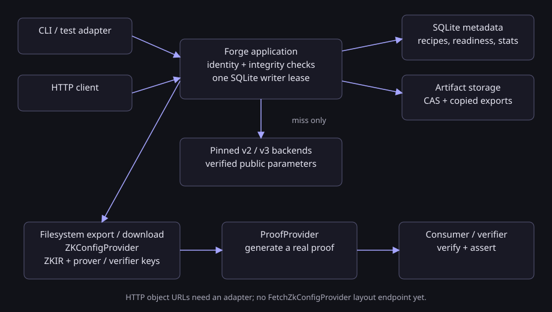
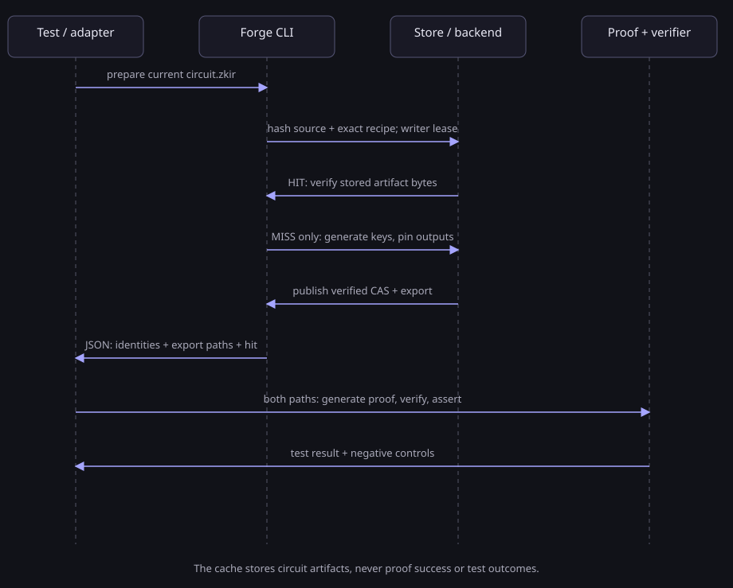
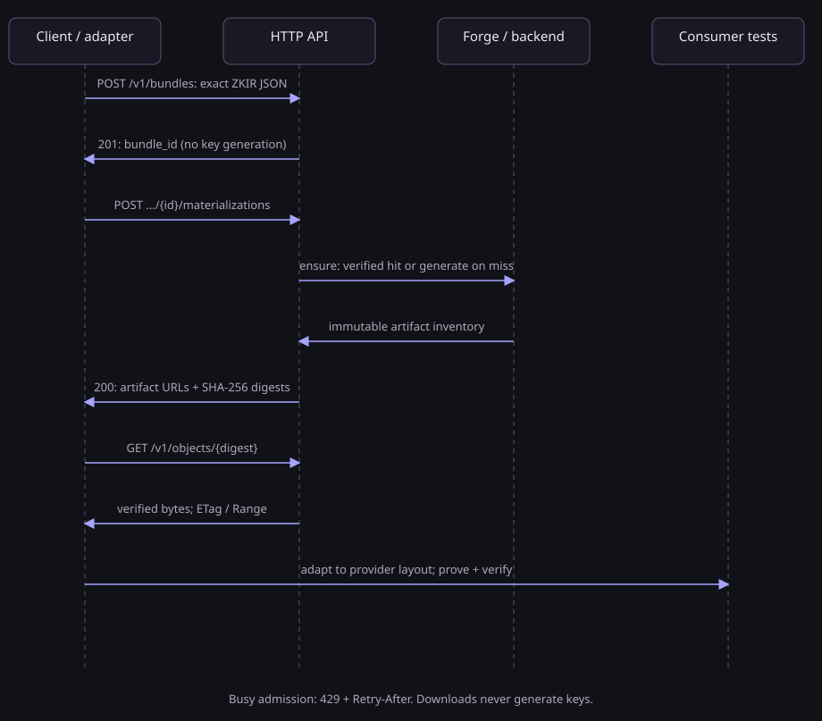

MIDNIGHT / DEVELOPER TOOLING
Generate keys.
Reuse. Distribute.
Generate, cache and distribute prover keys, verifier keys and ZKIR for Midnight circuits. Reuse the work you have already done — keep every proof, verification and assertion running.
DOCUMENTATION / 01
Install once. Use from any checkout.
Nix owns the Rust toolchain, locked dependencies and separate v3 worker. Start from this repository with Nix flakes enabled.
git clone https://github.com/betsudo/forge.git
cd forge
./bootstrap.sh --check
./scripts/install-local.sh
export PATH="$HOME/.local/bin:$PATH"
zkir-forge --version
Add the PATH entry to your shell profile and agent launcher environment. The installer retains a Nix GC root; rerun it after adopting a new commit. The default store is ~/.midnight-zkir-forge. Override it with --cache-dir or MIDNIGHT_ZKIR_FORGE_DIR.
MIDNIGHT_PP or the upstream default). Pass --fetch-params to allow official acquisition, or --params-dir to select a cache.DOCUMENTATION / 02
Cache the keys. Keep the proof.
Call prepare where your test normally generates circuit artifacts. Always pass the current circuit file. Forge hashes its exact bytes and the complete backend recipe.
zkir-forge prepare /absolute/path/to/circuit.zkir > artifacts.json
zkir-forge stats
The JSON result contains bundle_id, derivation_id, artifact_set_id, cache.hit, and export.files. Use the exported directory with a compatible ZK config provider. Keep proof generation in your existing proof provider.
import json, subprocess
from pathlib import Path
result = subprocess.run(
[str(Path.home() / ".local/bin/zkir-forge"),
"prepare", str(Path("generated/circuit.zkir").resolve())],
check=True, capture_output=True, text=True,
)
artifacts = json.loads(result.stdout)
paths = {f["kind"]: Path(f["path"])
for f in artifacts["export"]["files"]}
# Supply binary ZKIR, prover key and verifier key to the ZK config provider.
# Execute the original proof, verification and assertions every run.
zkir-forge qualify
zkir-forge --profile zkir3 qualify
MIDNIGHT DOMAIN MODEL
Circuit artifacts and providers
ZKIR means zero-knowledge intermediate representation. Forge accepts a circuit’s
JSON .zkir and produces binary ZKIR .bzkir, a prover key
.prover and a verifier key .verifier using an exact backend profile.
| Midnight term | Role in an integration |
|---|---|
ZKConfigProvider | Retrieves ZKIR, prover keys and verifier keys by circuit name. |
NodeZkConfigProvider | Reads keys/ and zkir/ from a filesystem directory. |
FetchZkConfigProvider | Retrieves the circuit artifact layout over HTTP/HTTPS. |
ProofProvider | Generates proofs using circuit artifacts. Forge supplies artifacts; the consumer still generates and verifies proofs. |
Forge exports keys/<circuit>.prover, keys/<circuit>.verifier
and zkir/<circuit>.bzkir, plus the source and integrity manifest.
The local provider uses a filesystem base directory; the fetch provider uses an HTTP base URL.
Match the consumer’s exact backend and serialization before using either.
/v1 object URLs
are insufficient. The opt-in publish-view command preserves a complete,
successful compiler output under /views/MANIFEST_SHA256, with an
independently pinned manifest hash. Exact compiler/provider fixtures have real
Node and Fetch proof qualification; this does not qualify every consumer. A view
defaults to 4 GiB total; an explicit operator budget can allow up to 64 GiB,
with the fixed 1 GiB per-file limit unchanged. The complete Passport view has
native macOS ARM64 qualification with selected application proofs. Linux consumer
qualification remains pending. Browser CORS and hosted TLS remain
deferred.Terminology reviewed against the official provider guide, Midnight.js reference and Midnight ZKIR repository. Current SDK documentation does not change Forge’s pinned compatibility profiles.
SYSTEM DESIGN
Architecture and request flows
The CLI and HTTP transport share the same cache application. SQLite serializes writers; content-addressed storage holds verified bytes. Profile-specific backends run only when materialization needs new keys.



INTEGRATION CONTRACT
CLI and HTTP conventions
| Surface | Current convention |
|---|---|
| CLI input | Arguments, flags and filesystem paths. prepare FILE and import FILE do not read circuit bytes from stdin. - has no stdin meaning. |
| CLI stdout | One newline-terminated JSON result per completed data command; schema: 1. Paths are absolute local paths. --help/--version are human-readable; serve is a long-running HTTP server. |
| CLI failure | Application failures: nonzero exit, JSON {schema:1,error:{code,message}} on stdout and diagnostics on stderr. Argument parsing errors use stderr and may have no JSON result. Check the exit status before consuming artifacts. |
| stdin / streaming | No JSON-RPC, JSON-lines session, stdin upload or persistent stdio server is implemented. Invoke one process per command and parse its stdout. |
| HTTP input | /v1 routes; raw exact single-circuit JSON upload (16 MiB limit); name/profile in query parameters. POST requires Content-Type: application/json, including an empty materialization request. |
| HTTP output | JSON metadata with origin-relative artifact URLs and SHA-256 digests; artifact GET/HEAD returns bytes/headers rather than a JSON/base64 wrapper. No server-local paths are returned. |
| HTTP lifecycle | Lazy registration; explicit synchronous materialization (200). GET never generates. Busy admission returns 429 with Retry-After: 1. No asynchronous 202 job protocol. |
| HTTP failures / auth | JSON errors with stable codes and HTTP status; optional bearer token protects all routes except liveness. Non-loopback binds require a token. No CORS is enabled. |
OpenAPI route/status/schema reference · API conventions and automation example.
DOCUMENTATION / 03
Exact profiles. Explicit compatibility.
| Selector | Input JSON | Official source |
|---|---|---|
ledger8-v2
|
2.0 | Ledger8 8.1.3 · ZKIR 2.1.1b5d3e965…
|
zkir3
|
3.0 | ZKIR 3.0.0-rc.1 · ir-source[v3-generic]
3a7ae036…
|
zkir31 | 3.1 | Compact 0.35.0 · ZKIR 3.1.0-rc.1e82d81d2… / ledger 9a8777c4… |
The v3 workers are separately compiled and locked. Each matches an exact consumer backend. JSON 3.1 uses zkir31 with ZKIR e82d81d2…, ledger 9a8777c4… and verifier-key[v7]; the older profiles retain verifier-key[v6]. Inspect the installed CLI’s profile before use. Ledger9 transaction/network support remains deferred.
zkir-forge profile
zkir-forge --profile zkir3 profile
zkir-forge --profile zkir3 prepare /absolute/path/circuit.zkir
Input format is detected from bytes. --profile asserts the expected backend; a mismatch fails without fallback or format conversion. Derivations include actual parameter content identity and implementation fingerprints.
Sources: ledger8 v2 pin · qualified v3 pin.
DOCUMENTATION / 04
An artifact API for one host.
The HTTP transport registers one raw ZKIR circuit per bundle, materializes synchronously, and serves immutable verified objects. An optional provider root serves explicitly published complete compiler views. Durable jobs, multi-circuit archive uploads and mutable aliases remain future scope.
zkir-forge serve --listen 127.0.0.1:8787
curl --fail-with-body \
-H "Content-Type: application/json" \
--data-binary @fixtures/assert.zkir \
"http://127.0.0.1:8787/v1/bundles?name=assert&profile=ledger8-v2"
Use the returned bundle identity to request materialization, then retrieve objects by their returned SHA-256 digests. No server filesystem path is accepted as an upload.
curl --fail-with-body -X POST -H "Content-Type: application/json" \
"http://127.0.0.1:8787/v1/bundles/BUNDLE_ID/materializations?profile=ledger8-v2"
curl --fail-with-body \
"http://127.0.0.1:8787/v1/objects/SHA256" -o artifact.prover
| Route | Contract |
|---|---|
POST /v1/bundles
|
Raw circuit registration; name/profile query parameters |
GET /v1/bundles/{id}
|
Bundle inventory and availability |
POST /v1/bundles/{id}/materializations
|
Synchronous ensure; bounded admission returns 429 when busy |
GET /v1/objects/{digest}
|
Verified immutable bytes; HEAD, ETag and Range |
GET /views/{manifestHash}/{path} |
Opt-in compiler provider layout; independently pinned metadata and verified requested-file bytes |
GET /v1/profiles · GET /v1/stats
|
Compatibility descriptors and cache efficiency |
/health/live · /health/ready
|
Liveness and readiness |
--token-file /private/token for bearer authentication. Non-loopback binds require a token. Put TLS at a trusted reverse proxy for remote use; this first transport is not a multi-tenant hosted service.DOCUMENTATION / 05
A reproducible service package.
The Nix image packages Forge and its isolated v3 worker. Build it on Linux or configure a Linux Nix builder from macOS. Persist the Forge store and verified public-parameter cache across restarts. Keep bearer tokens in a read-only mounted file; exclude secrets and circuit outputs from image layers.
nix build .#dockerImage --out-link result-image
docker load --input result-image
# Inspect the image metadata and container guide before running.
# Mount a persistent cache and bind the published port to loopback.
Image creation is separate from publishing. No registry push, hosted service or production release is implied. Follow the container guide for the exact image, volume and token configuration.
PORTABLE VERIFIED ARTIFACTS
Snapshots & CI cache
Move a verified snapshot into a fresh job-local store. Forge checks inventory, identities, SQLite metadata and persistent exports before atomic publication. Every restored test still runs its proofs, verification and assertions.
zkir-forge snapshot --output /tmp/forge-snapshot
zkir-forge --cache-dir /tmp/new-forge-job restore /tmp/forge-snapshot
midnight-zkir-forge-ci --helpDestinations must be absent. Partition CI caches by exact tool, platform, profile and actual parameter bytes; report hit deltas from a post-restore baseline. Only trusted successful runs with generation growth should prepare a bounded save. Snapshot checksums verify bytes; trusted workflow scopes establish provenance.
DOCUMENTATION / 06
Measure reuse. Preserve identity.
stats reports hit, miss and error counts; hit rate; generation timings; per-file requests, digests and sizes; hit bytes; and CAS/export disk usage. Per-file counters describe logical artifact requests, not every disk read.
zkir-forge stats
zkir-forge evict BUNDLE_ID --dry-run
zkir-forge evict BUNDLE_ID
zkir-forge ensure BUNDLE_ID
estimated_generation_avoided_ms uses the recipe’s last measured generation time. It is an estimate. Measure process-level wall time for your actual circuits before claiming speedups.
Hits recheck bytes. Eviction keeps source, small identity manifests and persistent copied exports. Regeneration must reproduce the pinned actual artifact identity or fail explicitly. Removing derived CAS data does not remove independent exports.
Local writers serialize through SQLite. The first service retains one generation at a time. An HTTP admission limit bounds waiting requests; this is not distributed scheduling.
Provider reads use a separate limit: two active verification/streaming operations,
up to eight waiting requests and a ten-second admission timeout. Overflow or expiry
returns 429 provider_reads_busy with Retry-After: 1. Every
range, HEAD or conditional request verifies and spools the whole selected file;
prefer a full download or a few resumes over many small ranges.
DOCUMENTATION / 07
Build against a written contract.
Behavior changes begin with an OpenSpec proposal, design, requirements, scenarios and tasks. The full product specification describes the destination; active changes define each delivered slice. Use an ADR when a material decision needs a separate record.
./bootstrap.sh --check
./bootstrap.sh -- cargo test --locked --test real_backend -- --ignored --test-threads=1
./bootstrap.sh -- cargo test --locked --test zkir3 -- --ignored --test-threads=1
./bootstrap.sh -- python3 scripts/build-docs.py
./bootstrap.sh -- python3 scripts/check-docs.py
Prepared workflows run bounded fast checks and offer explicit real-proof qualification; publication stays manual. See the CI and Pages guide.
Fast checks cover deterministic behavior. Explicit real-backend qualification generates fresh keys, compares reproduction, proves valid statements and rejects invalid statements and corrupted proofs. Lifecycle checks use temporary stores.
Product specification · OpenSpec changes · Qualification evidence · Contributing